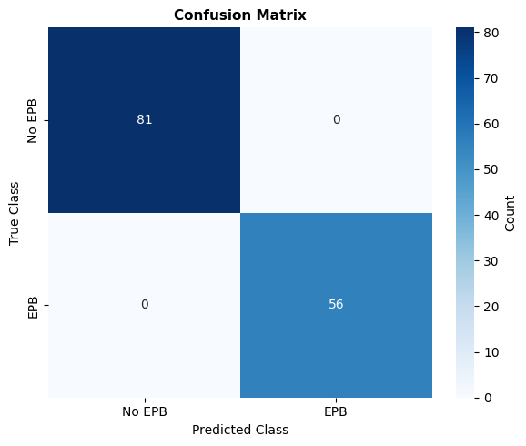
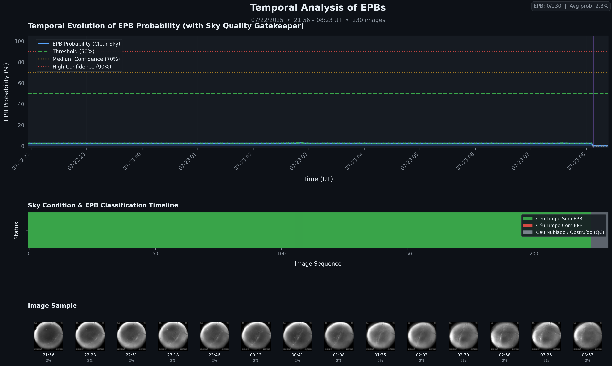
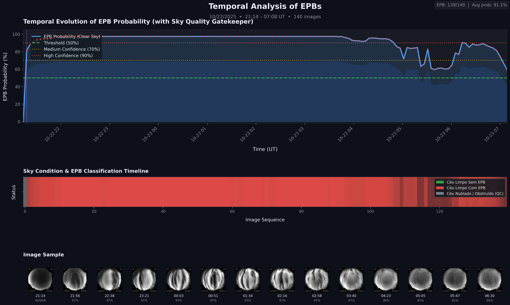

Detecção automática de Bolhas de Plasma Equatoriais em imagens all-sky com Machine Learning
Pré-processamento informado pela física + 2DPCA + ensemble de classificadores, com interpretabilidade via SHAP
O que são Bolhas de Plasma Equatoriais?
- Após o pôr do sol, a camada F inferior recombina mais rápido que a superior → forte gradiente vertical de densidade.
- A instabilidade Rayleigh–Taylor faz plasma rarefeito "subir" através do plasma denso, como um fluido leve sob um pesado.
- Surgem depleções alongadas ao longo das linhas de campo, que derivam para leste durante a noite.
- Causam cintilação em sinais de GNSS e comunicação via satélite.
Como enxergamos?
Imageadores all-sky da rede EMBRACE/INPE registram o airglow OI 630,0 nm (~250 km). As bolhas aparecem como faixas escuras no céu.

Cachoeira Paulista (CA) · OI 630 nm · 30/01/2025 · 28 quadros (cor falsa)
Poucos modos bastam — e o resíduo revela a bolha
Os 5 primeiros componentes concentram a informação estrutural; além disso a curva se achata (ruído). O erro de reconstrução se concentra exatamente onde está a depleção.


Validação cruzada (5 folds)


O modelo olha para a física?


SHAP em uma frase
Mede quanto cada região da imagem empurra a decisão para "bolha" (vermelho) ou "céu limpo" (azul).
✔ A atenção cai nas faixas alinhadas ao campo magnético que se estendem para os quadrantes superiores.
✔ Bordas da câmera, estrelas e luzes não dominam a decisão.
Uma noite inteira, quadro a quadro



Perguntas?
Alberto I. C. Vieira · Cosme A. O. B. Figueiredo